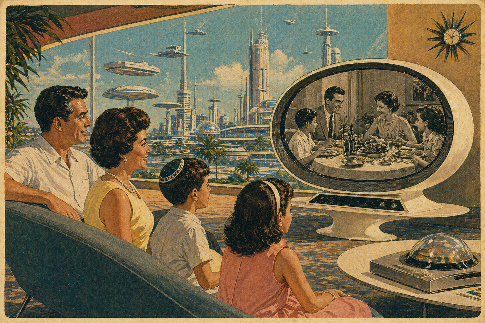

מבט על
באמלק
העמוד מציג הערכת כלל התקציב המושקע ביצירה תיעודית בארץ. ההשקעה הזאת מחולקת לארבעת מקורות מימון מרכזיים: השידור הציבורי, קרנות הקולנוע והערוצים המסחריים. התמונה שעולה מהנתונים מדאיגה. ארבעת מוקדי המימון המרכזיים אמורים להוות תשתית יציבה ליצירה תיעודית רחבה ומגוונת, אך בפועל הם מייצרים השקעה חלקית בלבד. פער זה נובע משילוב של רגולציה שאינה מעודכנת עבור גופי שידור מסחריים, היעדר אכיפה של חובות השקעה קיימות, ושינויים תכופים במנגנוני התמיכה של קרנות הקולנוע. כל זאת מתרחש לצד עלייה מתמשכת בעלויות ההפקה וקיפאון ריאלי בתקציבים לאורך שני העשורים האחרונים.
ℹ
הערכת סך ההשקעה בדוקו (2025)
62.4 מיליון ₪
מקורות המימון במספרים (2025)
←
קרנות הקולנוע
משתנה
21.5 מיליון ש"ח
←
כאן11
יציב
37.6 מיליון ש"ח
←
כבלים ולוויין
בירידה
3.3 מיליון ש"ח
(16)
21% מהחובה
←
הרשות השנייה
מתרסק
? מיליון ש"ח
(36)
0% מהחובה
מקורות המימון באחוזים (2025)
ℹ
השקעה בתוכן מקורי לאורך השנים (מליוני ש"ח)
